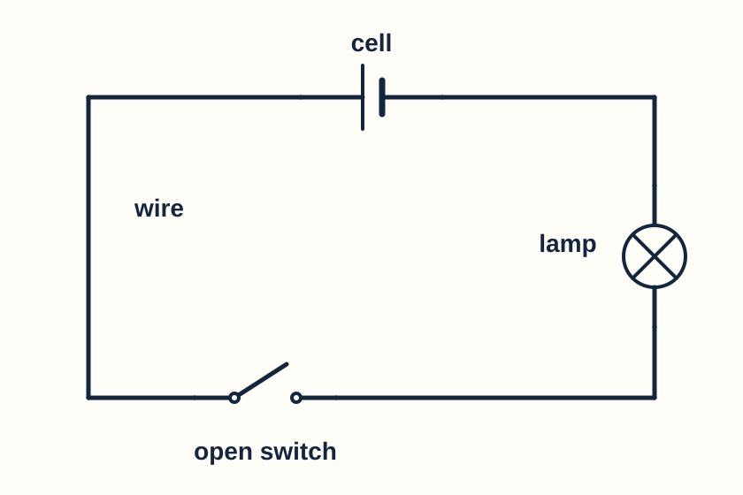
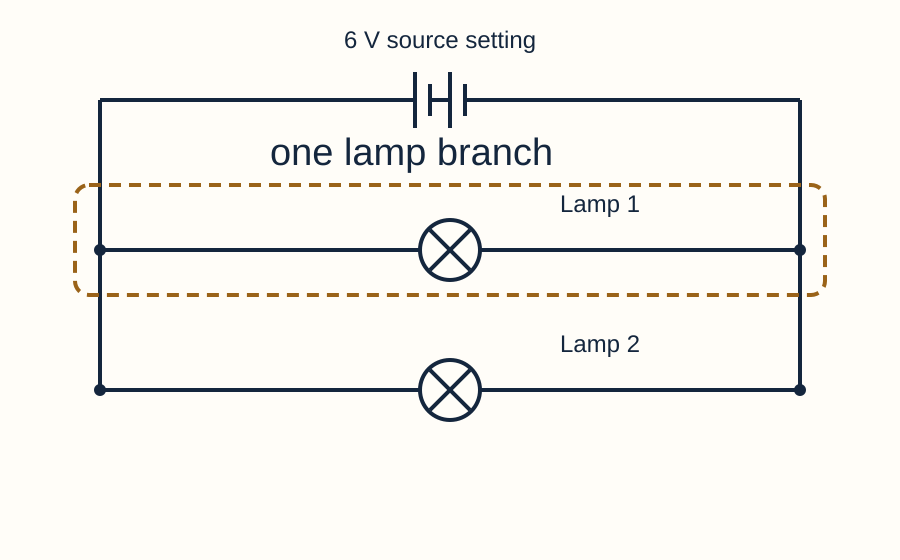
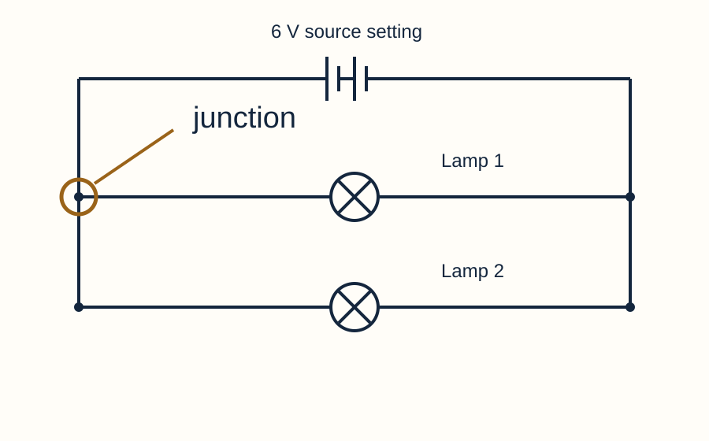

Year 7 · Current electricity · Help for everyone
Words for electricity
Hear a word, see its meaning and use it in a sentence.
Choose another resource
Keep this beside your lesson. Write and draw in your book or on a printed copy. You can explain aloud or direct a scribe. This page does not save answers.
Choose your lesson. Start with a few unfamiliar words. Listen, point to the picture and use each word in a sentence. Revisit the words next lesson.
31 words. Choose a lesson to show a smaller set.
component
A part used in a circuit.

Use it: A lamp is a component.
Keep the meaning clear: A component is one part; a circuit includes parts and connections.
cell
A single electrical source that transfers energy to charges in a circuit.

Use it: This circuit has one cell.
Keep the meaning clear: The word cell here does not mean a living cell.
battery
In our circuit diagrams, two or more cells connected together.
Use it: Two long–short pairs show a two-cell battery.
Keep the meaning clear: In Circuit Lab, “Battery” means one adjustable supply; its icon does not tell you how many cells are inside.
terminal
A connection point on a component.

Use it: Connect the lead to the lamp terminal.
Keep the meaning clear: A lamp holder has two terminals. Both must be connected for current through the lamp.
circuit symbol
A standard sign used to represent a component.
Use it: A circle with a cross represents a lamp.
Keep the meaning clear: A circuit symbol shows which component it is, not its realistic shape.
complete circuit
A circuit with an unbroken conducting path through the components and back to the source.

Use it: The closed switch completes this path.
Keep the meaning clear: A source and working components are also needed for a lamp to light.
open switch
A switch with separated contacts that make a gap.

Use it: Opening the switch breaks this single loop.
Keep the meaning clear: Open does not mean “electricity can enter”. It means the contacts are apart.
closed switch
A switch whose contacts touch and connect the path.
Use it: Closing this switch completes the lamp circuit.
Keep the meaning clear: Check the whole circuit: another gap can still stop current.
charge
An electrical property carried by particles. Electrons carry charge in metal wires.

Use it: Moving charges make an electric current.
Keep the meaning clear: Charge and energy are different. The lamp transfers energy; it does not use up charge.
current
The rate at which electric charge passes a point: charge passing each second.
Use it: The current is the same before and after a lamp in a single loop.
Keep the meaning clear: Current is not “energy used up by a lamp”.
ammeter
A meter that measures electric current.

Use it: Insert the ammeter into the current path.
Keep the meaning clear: Connect it in series. Do not connect it directly across a supply.
ampere (A)
The unit used to measure electric current. We often say “amp”.
Use it: The ammeter reads 0.30 amperes.
Keep the meaning clear: A is a unit for current. V is a unit for voltage.
energy transfer
Energy passed from one place or store to another.
Use it: The lamp transfers energy to its surroundings by light and heating.
Keep the meaning clear: A lamp transfers energy while charge continues around the complete circuit.
series
Components connected along one path, so the same current passes through each.

Use it: These two lamps are in series.
Keep the meaning clear: Moving a symbol to another side of the drawing does not create a new path.
parallel
Components or branches connected between the same two junctions.

Use it: Each lamp has a path through its own branch.
Keep the meaning clear: The connections decide whether a circuit is parallel, not whether its drawn lines look parallel.
branch
One of the paths between junctions in a circuit.

Use it: There is one lamp in each branch.
Keep the meaning clear: A circuit branch is a conducting route, not part of a tree.
junction
A point where conducting paths join or split.

Use it: At a junction, the current entering equals the total current leaving.
Keep the meaning clear: In Circuit Lab, crossed wires do not join unless they meet at a terminal.
resistance (Ω)
A measure of how much a component opposes current. Its unit is the ohm.
Use it: At the same voltage, a greater resistance gives a smaller current.
Keep the meaning clear: Resistance does not use up charge.
potential difference (voltage)
Energy transferred per unit charge between two points.

Use it: A potential difference of 6 volts means 6 joules are transferred per coulomb of charge.
Keep the meaning clear: Voltage is measured between two points. It is not the amount of current.
voltmeter
A meter that measures potential difference between two points.
Use it: Connect the voltmeter across the lamp terminals.
Keep the meaning clear: Keep the lamp path intact; add the voltmeter across it.
volt (V)
The unit of potential difference. One volt is one joule per coulomb.
Use it: The potential difference across the lamp is 3 volts.
Keep the meaning clear: The unit V names a measurement. The circle containing V is the meter symbol.
across
Connected to the two points being compared, such as the two lamp terminals.
Use it: Connect one voltmeter lead to each side of the lamp.
Keep the meaning clear: Across describes the electrical connections, not the position of the meter on the page.
identify
Name or select the thing asked for.
Use it: Identify the ammeter: point to the circle containing A.
Keep the meaning clear: You do not need a long explanation unless the question asks for one.
predict
Say what you think will happen before you test it.
Use it: I predict a smaller current because the series resistance will increase.
Keep the meaning clear: A prediction is made before the result is known.
measure
Use an instrument to find a value.
Use it: Measure current with an ammeter and record the unit A.
Keep the meaning clear: A measurement is a number with a unit, not just “more”.
compare
State a similarity or difference between results or circuits.
Use it: Both lamps have the same current, but different powers.
Keep the meaning clear: Name both things and say what is the same or different.
evidence
An observation or measurement that supports or challenges an explanation.
Use it: Both ammeters read about 0.59 A.
Keep the meaning clear: A simulator gives evidence about its model; real equipment is needed to test how well that model matches reality.
explain
Give a reason that connects a cause with what happens.
Use it: The lamp goes out because the open switch breaks its complete path.
Keep the meaning clear: “The lamp is off” describes an observation; add why it happens.
justify
Support a decision or claim with reasons and evidence.
Use it: I chose parallel branches because opening one branch left the other lamp on.
Keep the meaning clear: Give the decision and the evidence that makes it reasonable.
infer
Use evidence and scientific knowledge to reach a conclusion.
Use it: Equal current readings support the idea that charge is not used up by the lamp.
Keep the meaning clear: An inference goes beyond repeating the readings.
independent control
Being able to change one lamp’s switch without forcing the other lamp off.

Use it: A switch in each parallel branch lets either light stay on.
Keep the meaning clear: Test one on/one off and one off/one on, as well as both on and both off.
Check the meaning
Your turn
A pupil says, “Open the switch to let current through.” Explain what open means here.
Say your answer, point and explain, or write in your book.
Model answer & success criteria
Open means the switch contacts are separated. In a single loop, that gap stops steady current. Closing the contacts can complete the path.
Success: Name the gap and connect it to the lack of a complete path.